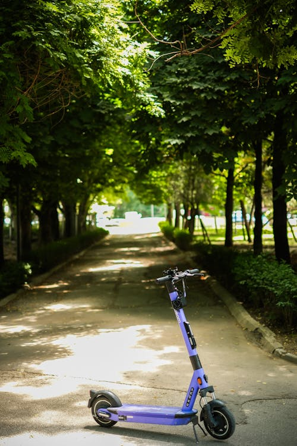

La trottinette électrique, bien qu'ayant récemment gagné en popularité, trouve ses racines dans les années 1990, lorsque les premiers prototypes ont été développés en Chine. Conçue comme un moyen de transport pratique et écologique, la trottinette électrique a lentement gagné en traction dans le monde entier au cours des dernières décennies.
Écologique : La trottinette électrique est souvent présentée comme une alternative respectueuse de l'environnement aux modes de transport traditionnels, car elle fonctionne à l'électricité, réduisant ainsi les émissions de carbone et la pollution atmosphérique.
Pratique : Légère et compacte, la trottinette électrique est facile à transporter et à ranger, ce qui en fait un choix pratique pour les déplacements urbains. Elle peut également être pliée pour un transport plus facile dans les transports en commun ou dans un coffre de voiture.
Économique : Comparée à d'autres moyens de transport comme les voitures ou les motos, la trottinette électrique est souvent plus abordable à l'achat et à l'entretien. De plus, son fonctionnement à l'électricité est généralement moins coûteux que l'essence.
Rapidité : Dans les zones urbaines congestionnées, la trottinette électrique peut offrir une alternative rapide et flexible aux embouteillages, permettant aux utilisateurs d'éviter les retards et d'arriver à destination plus rapidement.
Disponible pour tous : Étant généralement facile à utiliser, la trottinette électrique est accessible à un large éventail de personnes, que ce soit pour des trajets courts ou pour le plaisir de circuler en ville.